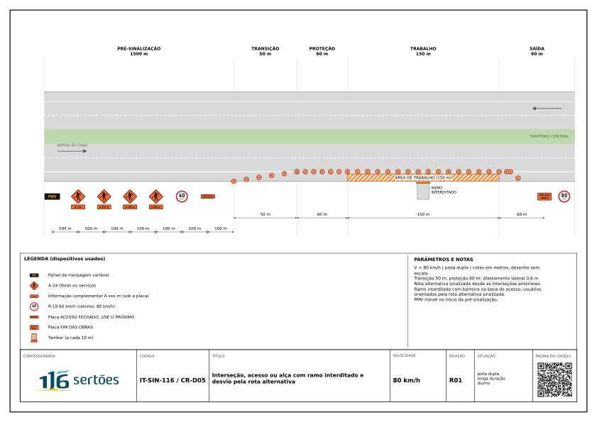
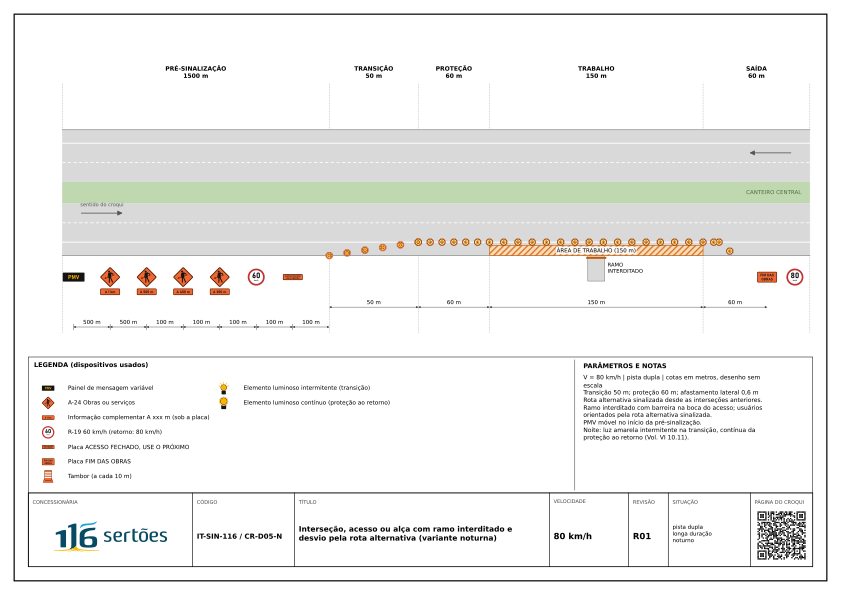

RASCUNHO R01 Revisão em elaboração, ainda não aprovada. Use somente como referência.
Croqui diurno



Croqui noturno



Resumo da aplicação
Resumo provisório: campos do catálogo de croquis, sem o texto completo da IT.
Descrição
Obra num ramo de interseção ou alça; o ramo fica fechado e o usuário é orientado para o acesso seguinte.
Parâmetros
| Via | dupla |
| Velocidade | 80 km/h |
| Tipo de serviço | longa duração |
| Faixas por sentido | 2 |
| Extensão do trabalho | 150 m |
| Controle de tráfego | rota alternativa |
Dispositivos mínimos
- PMV na pré-sinalização
- placa ACESSO FECHADO, USE O PRÓXIMO e orientação do acesso alternativo
- barreira na boca do ramo
- tambores no acostamento junto ao ramo
Notas
Velocidade de 80 km/h adotada pela proximidade da interseção. Comunicar o fechamento à PRF e ao usuário antes da implantação.
Checklist
LV-01 · Antes de implantar (16 itens)
Antes de cada implantação e de cada etapa nova. Preenche: Responsável pela frente.
- Plano de sinalização aprovado, disponível na frente em papel ou meio digital
- Frente consta da programação aprovada pelo CCO
- Liberação do CCO obtida, com rodovia, sentido, km PER, faixa e croqui; frente de vários dias com pedido diário
- Croqui do plano corresponde à classe do serviço (longa duração a partir de 3 dias)
- Variante noturna prevista no plano quando a montagem fica no local à noite
- PRF comunicada, quando o plano exige
- Usuário avisado com quarenta e oito horas de antecedência, em interdição programada
- Placas, dispositivos e veículos na quantidade do plano, com reserva
- Placas limpas, legíveis e retrorrefletivas; dispositivos inteiros e sem deformação
- Equipe com capacitação registrada em sinalização provisória; sinaleiros com capacitação específica
- Toda a equipe com vestimenta de alta visibilidade em bom estado
- Rádios testados entre sinaleiros e com o CCO, com bateria reserva
- Diálogo de segurança sobre o croqui e a análise prévia de riscos do dia
- Atividade na pista no inventário de riscos (NR-01) e APR da frente anexada ao plano
- Veículo de sinalização com seta luminosa pronto para proteger a implantação
- Implantação dentro da janela de horário do plano
LV-02 · Durante a ocupação, por turno (16 itens)
Início de cada turno; depois de chuva forte, vento forte ou impacto; inspeções operacionais e de segurança. Preenche: Responsável pela frente ou inspetor.
- Croqui implantado é o indicado no plano
- Primeira placa A-24; R-19 depois dela, em degraus de até 20 km/h; distância nas placas
- Placas nas posições do plano, com no mínimo 100 m entre placas em via rural e 50 m em via urbana
- Sinalização permanente conflitante coberta
- Transição com o comprimento do plano, fora de curva, crista e tabuleiro de OAE
- Espaçamento de cones, tambores e balizadores igual ou menor que o do plano
- Seta luminosa na faixa fechada, apontando para o lado livre; nenhuma no acostamento
- Área de proteção livre de pessoas, material e veículos
- Separação da obra como no plano, no limite da área ocupada; faixa aberta de no mínimo 3,00 m
- Barreira rígida interligada, sem blocos soltos, onde o plano a exige (longa duração junto a faixa a 60 km/h ou mais, ou desnível)
- Zona de trabalho dentro da extensão do plano (no máximo 1.000 m abaixo de 100 km/h)
- Veículos da obra na área de trabalho; veículo de sinalização à distância do item 6.4 dela, se previsto
- Transição posterior, FIM DAS OBRAS e R-19 de retorno na posição do plano
- Trabalhadores com vestimenta de alta visibilidade, de frente para o tráfego quando a tarefa permite
- Dispositivo deslocado, tombado ou danificado reposto; placa suja limpa; pista sem material da obra
- PMV móvel ativo no início da pré-sinalização, quando o plano o exige
LV-03 · Noturno (14 itens)
Antes do pôr do sol e em cada turno noturno, quando a montagem fica à noite. Preenche: Responsável pela frente ou inspetor.
- Variante noturna do croqui (CR-xx-N) implantada antes do pôr do sol
- Placas retrorrefletivas; nenhuma placa diurna mudou de lugar
- Elemento luminoso intermitente na transição e no bloqueio
- Elemento luminoso contínuo da área de proteção anterior até a área de retorno
- Elementos luminosos amarelos e acesos; os intermitentes com 50 a 60 piscadas por minuto
- Tambor na transição e no bloqueio a 80 km/h ou mais; cone só na área de trabalho
- Torre de iluminação só com equipe trabalhando à noite, sem ofuscar o condutor
- Torre de iluminação fora da pista aberta ao tráfego
- Pare e siga noturno por semáforo portátil, com a placa A-14 nos dois sentidos, no suporte da A-15
- Sinaleiro de alerta com bastão luminoso vermelho
- Boneco sinalizador fora de uso
- Seta luminosa ligada a noite inteira onde o croqui a prevê
- Passagem de pedestres iluminada
- Com neblina, chuva forte ou fumaça: serviço móvel e de curta duração suspensos e CCO avisado
LV-04 · Retirada (13 itens)
Retirada da sinalização e liberação da pista. Preenche: Responsável pela frente.
- CCO avisado do início da retirada
- Equipe, material e equipamento fora da pista antes de recolher a sinalização
- Retirada na ordem inversa da implantação, do FIM DAS OBRAS para a pré-sinalização
- Veículo de sinalização com seta luminosa protegendo a retirada
- Pare e siga: dispositivos recolhidos com o tráfego parado nos dois lados
- Desvio: sinalização da situação normal recolocada, com as placas cobertas, antes de desfazer o desvio
- Desvio: pista bloqueada por um momento antes da retirada dos dispositivos
- Placas da situação normal descobertas antes da abertura ao tráfego
- Desvio de 30 dias ou mais: tachas provisórias retiradas e demarcação definitiva recomposta
- Nenhuma placa, cone ou material deixado na faixa de domínio
- Obra em etapas: sinalização da etapa anterior retirada ou coberta antes de abrir a seguinte
- Rota alternativa: orientação retirada e mensagem do PMV atualizada
- CCO avisado da pista liberada, com a hora
Todos os croquis · Revisão R01